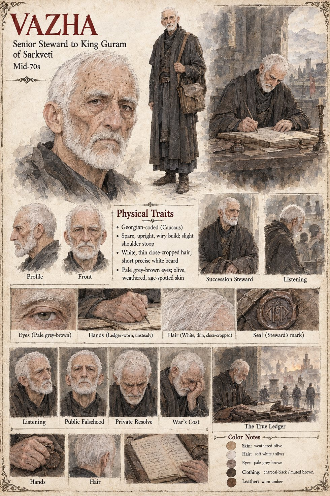

Vazha
Senior steward to King Guram · leader of the loyalist faction · outlives the war by nearly thirty years
Guram's senior steward, the one man in the palace who had known the King longer than the King had known his own crown, and who had carried both princes on his shoulders as infants. Against his better judgment he arranges the clockmaker's audience. When Guram dies he tells the court that no choice was left, a lie he carries for the rest of his life, because Guram's real choice had been made in confidence and he reasons that a crown installed by a father's whisper would always be one Bagrat could say was stolen. He never petitions the temple to enter Levan's name on the succession rolls, which he later calls the single worst piece of good advice he ever followed.
After Demna's ruling he tells the court the truth and is believed by perhaps a third of the room. He leads the smaller faction through one winter and part of a spring, refuses three offers of surrender, the last of which asks only for Levan, and keeps a private ledger of a little under two thousand dead. He survives the war and the peace by nearly thirty years, and asks Otar exactly once whether the prince lived; he chooses to read the small, tired smile as a yes. The sheet draws him spare, upright and slightly stooped, with thin close-cropped white hair, a short white beard and a steward's seal; it also gives an age that cannot be squared with his surviving the war by nearly thirty years, so none is stated here.
Appears In

Related Subjects


Related Records

Guram takes the surgeons' news standing and dry-eyed, and then, on the northern wall with Vazha and no one else, puts both hands over his face and makes a sound Vazha will never repeat.

Tavgora's outer wall goes to Bagrat's siege engines after Vazha's faction has refused three separate offers of surrender. The engines are brought up on the nineteenth day of Lorren, and Bagrat does not go to watch them.